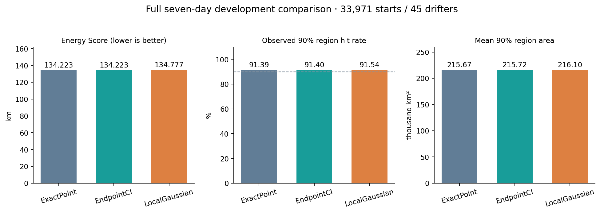
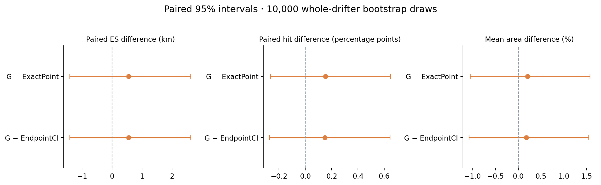
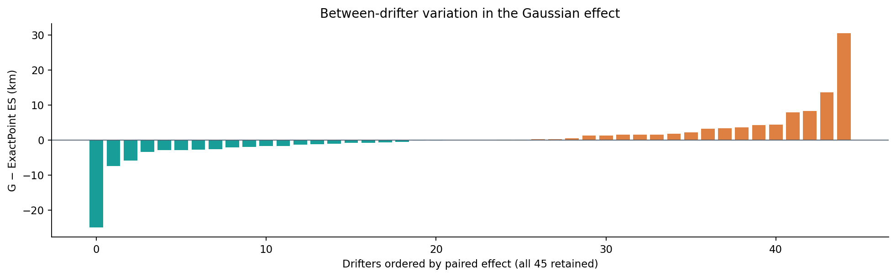
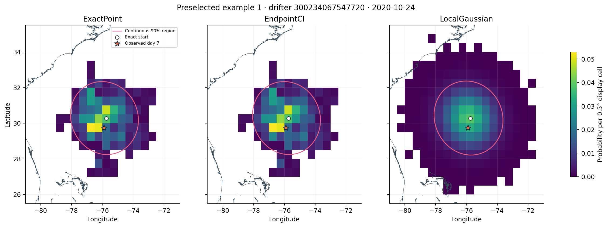
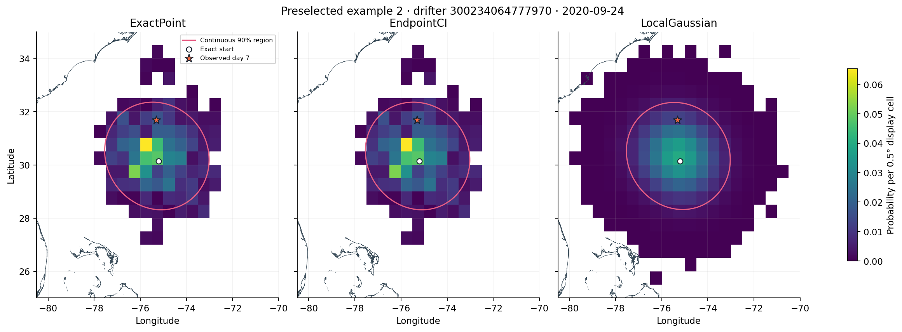
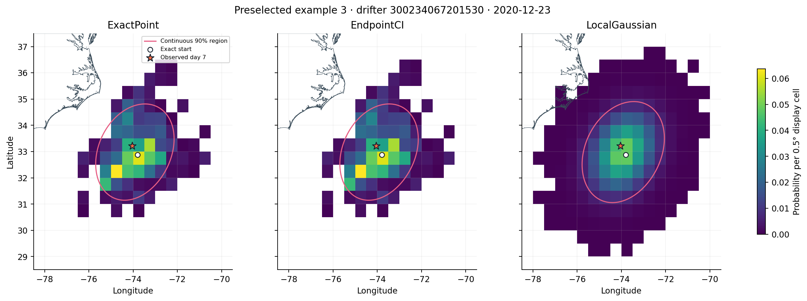
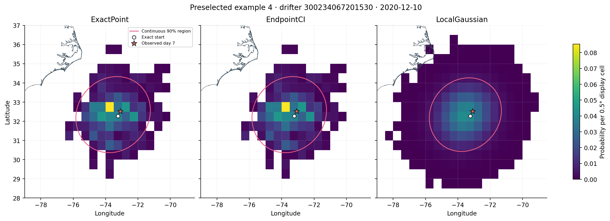
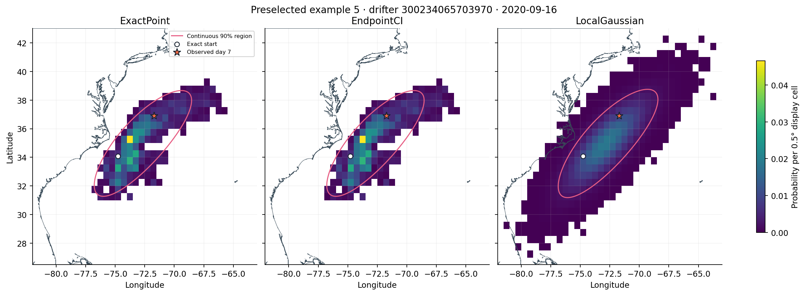
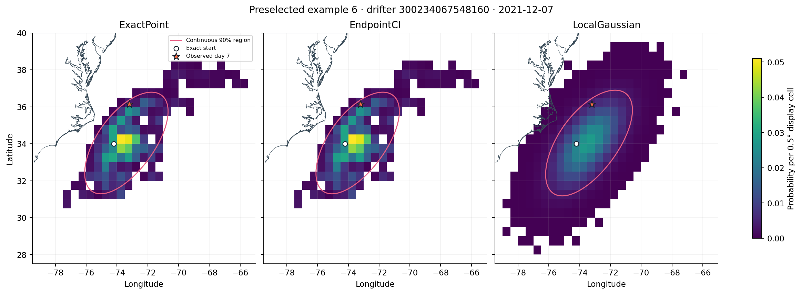

WHERE THINGS END UP · STEP 5 E1 · SEVEN-DAY CONDITIONAL TRANSITION
完整实验完成；高斯未达到质量不退化的改善标准
本轮保留原有模型，不自动替换默认模型。下面分别报告 ES、实际命中率和面积，避免把指标间的取舍称为全面改善。
2001–2019 训练、2020–2022 开发验证；七天直接预测。三组使用同样的精确起点和历史终点参考记录。本轮结果属于反复研究过的开发验证，未访问最终测试集。
三组模型的完整结果

| 模型 | ES（km）↓ | 90% 实际命中率 | 平均面积（km²） | 陆地概率 | 域外概率 |
|---|---|---|---|---|---|
| ExactPoint | 134.223226 | 91.392% | 215,666.9 | 0.000% | 0.000% |
| EndpointCI | 134.223188 | 91.397% | 215,723.9 | 0.000% | 0.000% |
| LocalGaussian | 134.776526 | 91.545% | 216,104.2 | 0.599% | 0.297% |
每条 drifter 内先平均，再给 45 条 drifter 相同评估权重。训练仍按参考配对等权。域外预测概率不等于观测到的首次退出事件；陆地概率也不代表已经发生搁浅。
是否达到了预先规定的改善标准

| 比较 | ES 差值与 95% 区间 | 命中差值（百分点） | 平均面积变化与 95% 区间 | 综合验收 |
|---|---|---|---|---|
| G − ExactPoint | +0.55330 [-1.40758, +2.62632] | +0.153 [-0.266, +0.647] | +0.203% [-1.054%, +1.574%] | 未通过 |
| G − EndpointCI | +0.55334 [-1.40754, +2.62639] | +0.148 [-0.273, +0.644] | +0.176% [-1.081%, +1.546%] | 未通过 |
- 相对 ExactPoint：未满足 ES 的实用增益与置信区间、命中率不下降且面积不扩大、ES 改善的数值分辨率、面积方向的数值分辨率、主要 ES 检验先行的优越性声明条件。
- 相对 EndpointCI：未满足 ES 的实用增益与置信区间、命中率不下降且面积不扩大、ES 改善的数值分辨率、命中方向的数值分辨率、面积方向的数值分辨率、主要 ES 检验先行的优越性声明条件。
主要比较是 G − ExactPoint，只有该主要 ES 检验通过，才允许作出 G − EndpointCI 的追加优越性结论。所有数值都会报告，不能挑选表现有利的对照。置信区间基于固定预测、10,000 次整条 drifter 配对重采样，不包含重新训练的不确定性。
不同 drifter 的表现

图中每一条柱对应一条完整保留的验证 drifter。分年份、训练支撑量和单条参考 drifter 贡献比例的结果仅作描述，不用于重新选择模型。
逐 ID 指标 · 分层描述 · 逐 ID 留一敏感性 · 区域面积分位数
六个事先选定的案例
这些案例沿用已有固定清单，在读取本轮真实落点前锁定。0.5° cell 仅用于呈现概率，不参与训练、ES 或区域命中判定。






独立复核与回退
- 全部 33,971 个高斯参数独立重算；全部三个模型的区域和 ES 重新计算并对照，固定 128 个起点另做逐一距离核对及独立 IID 高斯积分。
- 每个起点 5,521–8,000 对参考观测，19–240 个独立训练 drifter；最大协方差条件数 57.946。无高斯支撑回退、协方差修补或样本删减。
- EndpointCI 的不可用 error 记录保留原终点与完整投票；平均回退概率质量 6.213%。
- ES 使用 8,192 对积分样本／起点；每个区域重建包为 32,768 点。数值精度检查通过；真实落点在全量预测冻结后才被读取。
累计正式执行 43.1 分钟、独立复核 12.8 分钟。仅资源上限按你的批准调整；模型、样本、训练权重、评分与验收定义未变。
模型究竟训练了什么
这轮是解析估计，不是神经网络的多轮迭代训练。在每个查询起点的 100 km、最多最近 8,000 对参考记录（保留距离并列）中，对历史原始终点相对查询位置的 WGS84 东北坐标，估计一个均值向量和完整协方差矩阵。协方差除以 n，保留非对角项，没有加入 ridge、膨胀、误差方差、全局回退或模型融合。
高斯分布映射回地球后完整保留尾部、陆地和域外概率。共同评分是 ECEF 弦距离 Energy Score；90% 区域是共同 LAEA 坐标中的分布分位椭圆，不是最小面积区域。模型包保存输入身份、完整参数和参考记录关系；它不是只含一组全局均值与协方差的模型。
可复核交付物
完整汇总 · 配对比较与验收条件 · 全部高斯参数 · 模型包清单 · English technical report